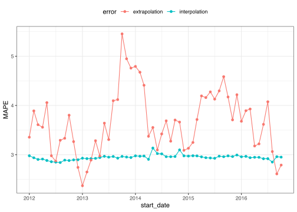

This article requires that you have the following packages installed: forecast, sweep, tidymodels, timetk, and zoo.
“Demo Week: Tidy Forecasting with sweep” is an excellent article that uses tidy methods with time series. This article uses their analysis with rsample to get performance estimates for future observations using rolling forecast origin resampling.
The data are sales of alcoholic beverages originally from the Federal Reserve Bank of St. Louis website.
library(tidymodels)
library(modeldata)
data("drinks")
str(drinks, give.att = FALSE)
#> Classes 'tbl_df', 'tbl' and 'data.frame': 309 obs. of 2 variables:
#> $ date : Date, format: "1992-01-01" "1992-02-01" ...
#> $ S4248SM144NCEN: num 3459 3458 4002 4564 4221 ...Each row is a month of sales (in millions of US dollars).
Suppose that predictions for one year ahead were needed and the model should use the most recent data from the last 20 years. To setup this resampling scheme:
roll_rs <- rolling_origin(
drinks,
initial = 12 * 20,
assess = 12,
cumulative = FALSE
)
nrow(roll_rs)
#> [1] 58
roll_rs
#> # Rolling origin forecast resampling
#> # A tibble: 58 x 2
#> splits id
#> <list> <chr>
#> 1 <split [240/12]> Slice01
#> 2 <split [240/12]> Slice02
#> 3 <split [240/12]> Slice03
#> 4 <split [240/12]> Slice04
#> 5 <split [240/12]> Slice05
#> 6 <split [240/12]> Slice06
#> 7 <split [240/12]> Slice07
#> 8 <split [240/12]> Slice08
#> 9 <split [240/12]> Slice09
#> 10 <split [240/12]> Slice10
#> # … with 48 more rowsEach split element contains the information about that resample:
roll_rs$splits[[1]]
#> <Training/Validation/Total>
#> <240/12/309>For plotting, let’s index each split by the first day of the assessment set:
get_date <- function(x) {
min(assessment(x)$date)
}
start_date <- map(roll_rs$splits, get_date)
roll_rs$start_date <- do.call("c", start_date)
head(roll_rs$start_date)
#> [1] "2012-01-01" "2012-02-01" "2012-03-01" "2012-04-01" "2012-05-01"
#> [6] "2012-06-01"This resampling scheme has 58 splits of the data so that there will be 58 ARIMA models that are fit. To create the models, the auto.arima() function from the forecast package is used. The functions analysis() and assessment() return the data frame, so another step converts the data in to a ts object called mod_dat using a function in the timetk package.
library(forecast) # for `auto.arima`
library(timetk) # for `tk_ts`
library(zoo) # for `as.yearmon`
fit_model <- function(x, ...) {
# suggested by Matt Dancho:
x %>%
analysis() %>%
# Since the first day changes over resamples, adjust it
# based on the first date value in the data frame
tk_ts(start = .$date[[1]] %>% as.yearmon(),
frequency = 12,
silent = TRUE) %>%
auto.arima(...)
}Each model is saved in a new column:
roll_rs$arima <- map(roll_rs$splits, fit_model)
# For example:
roll_rs$arima[[1]]
#> Series: .
#> ARIMA(4,1,1)(0,1,2)[12]
#>
#> Coefficients:
#> ar1 ar2 ar3 ar4 ma1 sma1 sma2
#> -0.1852 -0.0238 0.3577 -0.1517 -0.8311 -0.193 -0.3244
#> s.e. 0.1466 0.1656 0.1440 0.0809 0.1377 0.067 0.0640
#>
#> sigma^2 estimated as 72198: log likelihood=-1591.15
#> AIC=3198.3 AICc=3198.97 BIC=3225.7(There are some warnings produced by these first regarding extra columns in the data that can be ignored)
Using the model fits, performance will be measured in two ways:
In each case, the mean absolute percent error (MAPE) is the statistic used to characterize the model fits. The interpolation error can be computed from the Arima object. to make things easy, the sweep package’s sw_glance() function is used:
library(sweep)
roll_rs$interpolation <- map_dbl(
roll_rs$arima,
function(x)
sw_glance(x)[["MAPE"]]
)
summary(roll_rs$interpolation)
#> Min. 1st Qu. Median Mean 3rd Qu. Max.
#> 2.841 2.921 2.950 2.947 2.969 3.135For the extrapolation error, the model and split objects are required. Using these:
get_extrap <- function(split, mod) {
n <- nrow(assessment(split))
# Get assessment data
pred_dat <- assessment(split) %>%
mutate(
pred = as.vector(forecast(mod, h = n)$mean),
pct_error = ( S4248SM144NCEN - pred ) / S4248SM144NCEN * 100
)
mean(abs(pred_dat$pct_error))
}
roll_rs$extrapolation <-
map2_dbl(roll_rs$splits, roll_rs$arima, get_extrap)
summary(roll_rs$extrapolation)
#> Min. 1st Qu. Median Mean 3rd Qu. Max.
#> 2.371 3.227 3.629 3.653 4.113 5.453What do these error estimates look like over time?
roll_rs %>%
select(interpolation, extrapolation, start_date) %>%
pivot_longer(cols = matches("ation"), names_to = "error", values_to = "MAPE") %>%
ggplot(aes(x = start_date, y = MAPE, col = error)) +
geom_point() +
geom_line()
It is likely that the interpolation error is an underestimate to some degree.
It is also worth noting that rolling_origin() can be used over calendar periods, rather than just over a fixed window size. This is especially useful for irregular series where a fixed window size might not make sense because of missing data points, or because of calendar features like different months having a different number of days.
The example below demonstrates this idea by splitting drinks into a nested set of 26 years, and rolling over years rather than months. Note that the end result accomplishes a different task than the original example, in this case, each slice moves forward an entire year, rather than just one month.
# The idea is to nest by the period to roll over,
# which in this case is the year.
roll_rs_annual <- drinks %>%
mutate(year = as.POSIXlt(date)$year + 1900) %>%
nest(data = c(date, S4248SM144NCEN)) %>%
rolling_origin(
initial = 20,
assess = 1,
cumulative = FALSE
)
analysis(roll_rs_annual$splits[[1]])
#> # A tibble: 20 x 2
#> year data
#> <dbl> <list>
#> 1 1992 <tibble [12 × 2]>
#> 2 1993 <tibble [12 × 2]>
#> 3 1994 <tibble [12 × 2]>
#> 4 1995 <tibble [12 × 2]>
#> 5 1996 <tibble [12 × 2]>
#> 6 1997 <tibble [12 × 2]>
#> 7 1998 <tibble [12 × 2]>
#> 8 1999 <tibble [12 × 2]>
#> 9 2000 <tibble [12 × 2]>
#> 10 2001 <tibble [12 × 2]>
#> 11 2002 <tibble [12 × 2]>
#> 12 2003 <tibble [12 × 2]>
#> 13 2004 <tibble [12 × 2]>
#> 14 2005 <tibble [12 × 2]>
#> 15 2006 <tibble [12 × 2]>
#> 16 2007 <tibble [12 × 2]>
#> 17 2008 <tibble [12 × 2]>
#> 18 2009 <tibble [12 × 2]>
#> 19 2010 <tibble [12 × 2]>
#> 20 2011 <tibble [12 × 2]>The workflow to access these calendar slices is to use bind_rows() to join
each analysis set together.
mutate(
roll_rs_annual,
extracted_slice = map(splits, ~ bind_rows(analysis(.x)$data))
)
#> # Rolling origin forecast resampling
#> # A tibble: 6 x 3
#> splits id extracted_slice
#> * <list> <chr> <list>
#> 1 <split [20/1]> Slice1 <tibble [240 × 2]>
#> 2 <split [20/1]> Slice2 <tibble [240 × 2]>
#> 3 <split [20/1]> Slice3 <tibble [240 × 2]>
#> 4 <split [20/1]> Slice4 <tibble [240 × 2]>
#> 5 <split [20/1]> Slice5 <tibble [240 × 2]>
#> 6 <split [20/1]> Slice6 <tibble [240 × 2]>#> ─ Session info ───────────────────────────────────────────────────────────────
#> setting value
#> version R version 3.6.1 (2019-07-05)
#> os macOS Mojave 10.14.6
#> system x86_64, darwin15.6.0
#> ui X11
#> language (EN)
#> collate en_US.UTF-8
#> ctype en_US.UTF-8
#> tz America/New_York
#> date 2020-03-26
#>
#> ─ Packages ───────────────────────────────────────────────────────────────────
#> package * version date lib source
#> broom * 0.5.4 2020-01-27 [1] CRAN (R 3.6.0)
#> dials * 0.0.4 2019-12-02 [1] CRAN (R 3.6.1)
#> dplyr * 0.8.5 2020-03-07 [1] CRAN (R 3.6.0)
#> forecast * 8.9 2019-08-22 [1] CRAN (R 3.6.0)
#> ggplot2 * 3.3.0 2020-03-05 [1] CRAN (R 3.6.0)
#> infer * 0.5.1 2019-11-19 [1] CRAN (R 3.6.0)
#> parsnip * 0.0.5.9000 2020-03-26 [1] local
#> purrr * 0.3.3 2019-10-18 [1] CRAN (R 3.6.0)
#> recipes * 0.1.10 2020-03-18 [1] CRAN (R 3.6.1)
#> rlang 0.4.5.9000 2020-03-21 [1] Github (r-lib/rlang@a90b04b)
#> rsample * 0.0.5.9000 2020-03-23 [1] Github (tidymodels/rsample@4fdbd6c)
#> sweep * 0.2.2 2019-10-08 [1] CRAN (R 3.6.0)
#> tibble * 2.1.3 2019-06-06 [1] CRAN (R 3.6.0)
#> tidymodels * 0.1.0 2020-02-16 [1] CRAN (R 3.6.0)
#> timetk * 0.1.2 2019-09-25 [1] CRAN (R 3.6.0)
#> tune * 0.0.1.9000 2020-03-21 [1] Github (tidymodels/tune@6694258)
#> workflows * 0.1.0 2019-12-30 [1] CRAN (R 3.6.1)
#> yardstick * 0.0.5 2020-01-23 [1] CRAN (R 3.6.0)
#> zoo * 1.8-7 2020-01-10 [1] CRAN (R 3.6.0)
#>
#> [1] /Library/Frameworks/R.framework/Versions/3.6/Resources/library